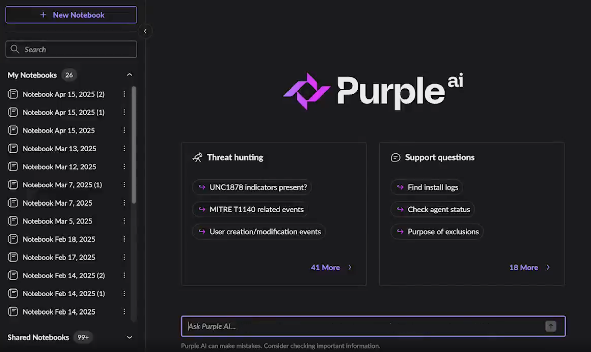
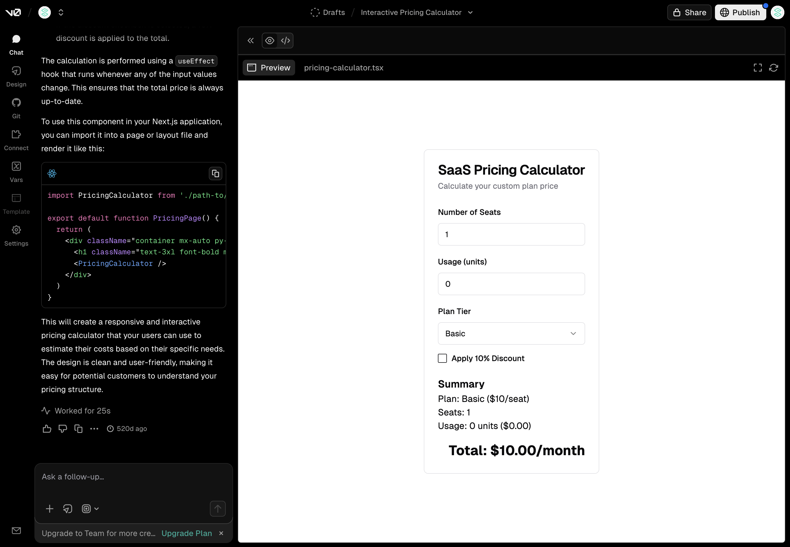

Benchmark — Quiet UI
 UI screenshot
UI screenshot- Paleta acromática: IROC gris/negro, cyan solo para anomalías
- Saturación = urgencia: más brillante = más urgente
- Fatiga cero: turnos de 12h, consola silenciosa
 UI screenshot
UI screenshot- Estética aspiracional: "si funciona para SpaceX, funciona para minería"
- Layout limpio: cada zona tiene un propósito, no un dato
- Premium minimalista: refuerza concepto "iPhone-like" del stakeholder
 UI screenshot
UI screenshot- Filtrado en borde: clasificar eventos antes de mostrarlos
- Métrica del 99%: argumento de venta poderoso
- 3 niveles: info (log) → warning (badge) → critical (alerta)
También: Compound (Numerical Stillness) · Linear (Threaded Assets) · Polestar (Scandinavian minimalism) · Ramify (Visual Trust)
Benchmark — Clear Path

UI screenshot- D→A→R nativo: detección + análisis + acción en un solo flujo
- Confianza en IA: muestra su razonamiento ("por qué recomiendo esto")
- Radio de impacto: "si cae esta pala, qué más se afecta"

UI screenshot- Vistas de crisis generadas: vista específica para ESE evento
- Interfaz como respuesta: se adapta a lo que necesitas ahora
- Interacción conversacional: describe lo que necesitas, CORE lo muestra
 UI screenshot
UI screenshot- Proactivo: "esto se puede arreglar así" antes de que lo pidas
- Archive Search: "qué pasó el martes a las 3AM" sin esperar
- Quiet by default: alertas solo cuando se sale del umbral
También: F1 McLaren Atlas (The Delta — plan vs real) · Ramp (Actionable Automation) · Flexport (Threaded Asset Management)
Benchmark — Time Sight
 UI screenshot
UI screenshot- Slider temporal: "qué hacía el camión a las 3:42 AM?" — arrastrar y ver
- Correlación sincronizada: GPS + velocidad + payload en un timeline
- Post-mortem visual: entender por qué pararon los autónomos
 UI screenshot
UI screenshot
- Narrativa causal: contar la historia, no mostrar un log
- Grafo de propagación: un fallo → múltiples impactos downstream
- Causa raíz automática: el sistema propone causa antes de investigar
 UI screenshot
UI screenshot- Zoom temporal: 1s durante crisis, 5min en operación normal
- Tendencia vs puntual: "1 bloqueo" vs "3 esta semana"
- Costo-beneficio: el sistema decide qué retener
También: Foxglove (Multicanal sincronizado para robótica) · Axiom (Ingesta ilimitada, busca después) · Adobe Premiere (Timeline como paradigma de navegación)
Benchmark — Omni Sense
 UI screenshot
UI screenshot- Voz en terreno: "Hey TIM, ¿cumple esta berma?" — manos libres
- Fusión sensorial: cámara + GPS + radio = contexto completo
- Una plataforma: múltiples inputs, un solo sistema
 UI screenshot
UI screenshot- Triage por canales: emergencias, operaciones, mantención
- Push-to-Talk: habla → el sistema transcribe + clasifica
- Presencia visual: quién está disponible sin preguntar
 UI screenshot
UI screenshot- Flujos automatizados: sensor detecta X → sistema ejecuta Y
- Weather Intelligence: clima en las decisiones operacionales
- Briefing contextual: resumen de turno llega automáticamente
También: Anduril Lattice OS (Spatial Intelligence, fusión autónoma) · Slack (Threads como modelo de comunicación) · Garmin G3000 (Visión sintética 3D en misión crítica)
Caso #1 — Visualización: Caída de Equipo Crítico

Momento: Recomendación
La pala ya cayó. El sistema ya detectó y analizó. Ahora muestra 3 opciones rankeadas con impacto en tonelaje. El operador no interpreta — elige.
Quiet UI · Clear Path
Consola acromática (95% gris/negro). Color solo en la anomalía: la pala caída pulsa en cyan. Panel lateral con opciones listas.
Caso #2 — Visualización: Riesgo Espacial y Seguridad

Momento: Detección
El sistema cruza datos de ARIS (radar geotécnico), GPS de equipos y prismas de monitoreo. Detecta que la Pala EX-205 está en zona de riesgo — antes de que el operador lo note.
Omni Sense + Time Sight
Fusión multisensor: radar + GPS + prismas en un solo mapa. Zonas de restricción en tiempo real. Alerta automática sin consultar múltiples sistemas.
Caso #3 — Visualización: Anticipación de Cuello de Botella

Momento: Análisis
El sistema ya detectó que en 45 min se bloquea el chancador. Ahora muestra el impacto aguas abajo — tonelaje, dinero, áreas afectadas — y la causa raíz específica.
Time Sight + Clear Path
Timeline predictivo del turno con marcador "ahora" y proyección amber. Flujo de tonelaje declinando hacia el punto de bloqueo. Impacto cascada en planta y KPI.
Caso #4 — Visualización: Briefing Inteligente

Momento: Detección
Sofía camina al turno. 15 min antes de la reunión, el sistema la alcanza por WhatsApp — el canal correcto para alguien en movimiento.
Omni Sense + Time Sight
Briefing proactivo: tronadura -20%, 5 camiones parados, 2 riesgos. Priorización objetiva contra plan. Llega listo, no el raw data.
Caso #5 — Visualización: Copiloto en Terreno

Momento: Análisis
El jefe de turno preguntó por voz "¿cumplo la berma?" El sistema ya cruzó la foto con la normativa Sernageomin. Ahora muestra la respuesta directa — cumple o regulariza.
Omni Sense + Clear Path
Interfaz por voz y foto — manos libres en terreno. El sistema escucha la radio, transcribe y prioriza solicitudes. Normativa cruzada automáticamente.
Caso #6 — Visualización: Plan vs Realidad

Momento: Análisis
El gerente ve la brecha entre plan y realidad. El sistema ya cruzó datos de autónomos, antenas y mineral. Ahora muestra la cadena causal completa — de síntoma a causa raíz.
Time Sight + Clear Path
Time Scrubbing: rebobinar la semana segundo a segundo. Split Plan/Realidad con gap visual. Anomalías geolocalizadas en mapa. Causa raíz con correlación.
Caso #7 — Visualización: Optimización del Plan

Momento: Recomendación
Orchestra simuló 4 configuraciones de secuenciación de fases. Ahora muestra la estrategia recomendada para las próximas 4 semanas — no un fix de turno, sino una reconfiguración global.
Time Sight + Clear Path
De decisiones tácticas a reconfiguración estratégica. No "qué hacer este turno" sino "qué patrón adoptar para el mes." El plan deja de ser estático — se adapta a la realidad geológica.
Caso #8 — Visualización: Reportería Ejecutiva

Momento: Detección
Viernes 3 PM, pre-directorio. El reporte llega automático al CFO — semáforo de KPIs, sin PDF manual. El sistema busca al CFO, no al revés.
Omni Sense + Time Sight
El reporte busca al CFO — no al revés. Traducción automática: de tonelaje a dinero. Drill-down financiero en el teléfono, listo para directorio.